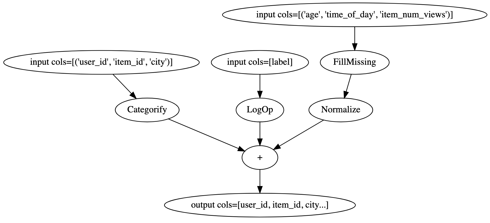

Architecture#
The NVTabular engine uses the RAPIDS Dask-cuDF library, which provides the bulk of the functionality for accelerating dataframe operations on the GPU and scaling across multiple GPUs. NVTabular provides functionality commonly found in deep learning recommendation workflows, allowing you to focus on what you want to do with your data, and not how you need to do it. NVTabular also provides a template for our core compute mechanism, which is referred to as Operations (ops), allowing you to build your own custom ops from cuDF and other libraries.
Once NVTabular is installed, the next step is to define the preprocessing and feature engineering pipeline by applying the ops that you need. For additional information about installing NVTabular, see Installation.
Operations#
Operations are a reflection of the way in which compute happens on the GPU across large datasets. There are two types of compute:
the type that touches the entire dataset (or some large chunk of it)
the type that operates on a single row
Operations split the compute into two phases:
Statistics Gathering is the first phase where operations that cross the row boundary can occur. An example of this would be in the Normalize op that relies on two statistics: mean and standard deviation. To normalize a row, we must first have these two values calculated using a Dask-cudf graph.
Transform is the second phase that uses the statistics, which were created earlier, to modify the dataset and transform the data. NVTabular allows for the application of transforms, which doesn’t only take place during the modification of the dataset but also during dataloading. The same transforms can also be applied with Inference.
NVTabular’s preprocessing and feature engineering workflows are directed graphs of operators, which are applied to user defined groups of columns. Defining this graph is decoupled from the Workflow class, and lets users easily define complicated graphs of operations on their own custom defined sets of columns. The NVTabular workflow uses an API similar to the one noted on scikit-learn for dataset transformations. Statistics are calculated using a ‘fit’ method and applied with a ‘transform’ method. The NVTabular Dataset object can handle both the input and output for datasets using the ‘transform’ method of the workflow, taking an input dataset and returning it as output in the form of a transformed dataset.
An operator can be applied to a ColumnGroup from an overloaded operator (>>), which returns a new ColumnGroup so that more operators can be applied to it as shown in the example below. A ColumnGroup is a list of column name strings. The operators work on every column in the ColumnGroup. In the example below, CONT_COLUMNS represents a group of columns for continuous features. We can apply multiple operators by chaining them to CONT_COLUMNS to obtain transformed continuous features.
CONT_COLUMNS = ['col1 name', 'col2 name', ...]
cont_features = CONT_COLUMNS >> <op1> >> <op2> >> ...
A Higher Level of Abstraction#
The NVTabular code is targeted at the operator level and not the dataframe level, which provides a method for specifying the operation that you want to perform, as well as the columns or type of data that you want to perform it on. There are two types of operators:
Base Operator: It transforms columns using a transform method that processes the cudf dataframe object and a list of columns and returns the transformed cudf dataframe object. It also declares the columns that are produced using the ‘output_columns_names’ method and additional column groups using the ‘dependencies’ method.
StatOperator: A subclass that uses a ‘fit’ method to calculate statistics on a dataframe, a ‘finalize’ method to combine different statistics from various dask workers, and save/load methods to handle serialization.
A flexible method is used for defining the operators in the workflow, which is treated as a directed acyclic graph of operators on a set of columns. Operators take in identical types of column sets and perform the operation across each column in which the output is transformed during the final operation into a long tensor for categorical variables or float tensor for continuous variables. Operators can be chained to allow for more complex feature engineering or preprocessing. Chaining operators to the ColumnGroup defines the graph, which is necessary to produce the output dataset. The chained operators replace the chained columns by transforming the columns while retaining the same column names.
Here’s a holistic processing workflow example:
import nvtabular as nvt
from nvtabular import ops
# define set of columns
cat_columns = ["user_id", "item_id", "city"],
cont_columns = ["age", "time_of_day", "item_num_views"],
label_column = ["label"]
# by default, the op will be applied to all
# columns of the each ColumnGroup
cat_features = cat_columns >> ops.Categorify()
cont_features = cont_columns >> ops.FillMissing() >> ops.Normalize()
label_feature = label_column >> ops.LogOp()
# A NVTabular workflow orchastrates the pipelines
# We create the NVTabular workflow with the output ColumnGroups
proc = nvt.Workflow(cat_features + cont_features + label_feature)
dataset = nvt.Dataset("/path/to/data.parquet")
# Calculate statistics on the training set
proc.fit(dataset)
# record stats, transform the dataset, and export
# the transformed data to a parquet file
proc.transform(dataset).to_parquet(output_path="/path/to/export/dir", shuffle=nvt.io.Shuffle.PER_WORKER)
We can easily convert this workflow definition into a graph, and visualize the full workflow by concatenating the output ColumnGroups.
(cat_features+cont_features+label_feature).graph

The Rename operator can be used to change the names of columns. This operator provides several different options for renaming columns such as applying a user defined function to get new column names, as well as appending a suffix to each column. Refer to the API documentation for the Rename operator.